3 COVID-19
COVID-19 has been an unprecedented event in US (and world) history. Given the ongoing nature of this worldwide pandemic, what we include below is certainly not final. Instead, we hope to highlight some of the impacts of COVID-19 to promote community discussion about how to best move forward.
3.1 Demographics
While we can not yet be sure of the long term effects of COVID-19, two things are clear:
- Individuals with comorbidities are most at risk
- Social distancing works.
The corollary to these two facts is that the elderly who tend to have weaker immune systems or existing medical conditions and those who cannot effectively social distance are particularly at risk. Related to these concerns is the fact that low income individuals are also those most likely to have experienced economic insecurity as a result of weakening labor markets during the pandemic. Moreover, similar to the elderly, those of low socioeconomic status are more likely to experience comorbidities and have higher mortality rates. But how old exactly are Santa Barbara County residents? How many individuals cannot effectively socially distance? Where do our most vulnerable live?
The age distribution of Santa Barbara County is shown in the table below. Evidently, the age mix of Santa Barbara County residents has remained largely unchanged over the past 5 years. The estimated median age of individuals in the county is approximately 34 years of age, roughly 4 years below that of the United States as a whole. Despite this fact, a substantial fraction of the Santa Barbara County population is at elevated risk during the pandemic as a result of old age. In fact, those aged 65+ make up 15.6% of our population. According to the Center for Disease Control, estimates that approximately 8 out of 10 COVID-19 deaths reported in the United States have come from this population.
The population density, and in particular the number of persons per household, is also key to understanding how any disease outbreak is likely to affect our communities. Even with strict adherence to guidelines aimed at controlling the spread of disease, e.g. social distancing, it is difficult for some in our community to adhere to such recommendations. A potential consequence of a high number of persons per household is that diseases have a greater potential to spread as result of weekly shopping trips, going to work, etc.
The graph below displays the distribution of household size for both North and South County While both regions of Santa Barbara County have a high number of one and two person households, North County has substantially more high-density households than does South County. In fact, households containing more than four persons make up 22% of households in North County whereas they make up only 11.6% of households in South County. Of particular note is the relatively high number of 7+ person households in North County.

While the poorest among us are more likely to live in high density housing environments, the Office of Disease and Health Promotion consistently finds that those of low socioeconomic status tend to experience higher rates of heart disease and diabetes, have higher rates of disability, and maintain higher mortality rates. Identifying those in our community that suffer from these comorbidities is of first order importance when managing the health risk of disease outbreaks. The graph below shows the distribution of household income in North and South County. It also displays in red the income groups for which all members are below the federal poverty line for a household consisting of four individuals. As of January 15, 2020, the federal poverty line in use by the Department of Health and Human Services for such households is $26,200. This cutoff represents an underestimate of those who are financially constrained in high cost of living areas. Both regions have roughly the same number of impoverished households as defined here. Evidently, however, North County has significantly fewer high income households relative to South County, with a much larger drop off following the modal income group of $50,000-$75,000.
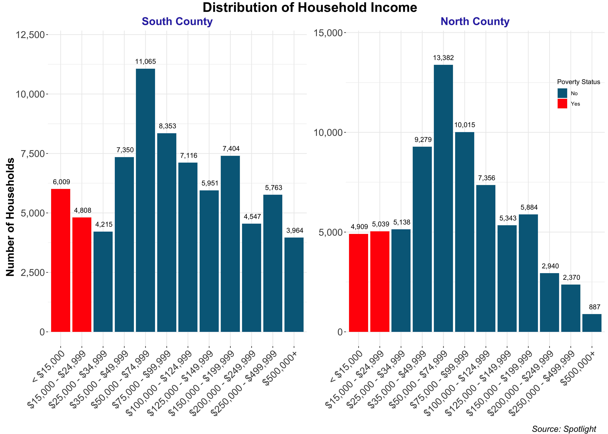
3.2 Foot Traffic
While demographic data informs who in our community are most at risk during disease outbreaks, it does not provide the full picture of those affected. The daily activities of people across the United States have fundamentally change due to COVID-19, both by choice and because of local, state, and federal policies. As a result, business have faced an unprecedented demand shock for which many were unprepared. The effect of the pandemic on businesses has first order consequences for individual employment and income. Moreover, to the extent that the businesses close their doors for good, the effect of COVID-19 on the demand for goods and services will contribute to the long-run, persistent effect of the pandemic on our community.
Santa Barbara City, for example, is known as a year-round tourist and has many hotels, motels—including the original Motel 6—museums, parks, and other tourist destinations. Beginning in March 2020, however, the number of visits per week to such attractions saw large declines.


Interestingly, nature parks saw a small spike in foot traffic immediately following the statewide shelter-in-place order on March 19th. Presumably, this spike reflects the fact that individuals were adjusting to the “new normal” in addition to a desire to return to the outdoors after a week of remaining stuck indoors. In fact, Elings Park and Shoreline Park, two of the most popular parks in Santa Barbara, both saw spikes in foot traffic the week of March 30th when the Zoo and local museums remained closed.


In addition to beaches and parks, many tourists come to Santa Barbara County to visit wine tasting rooms and microbreweries. Breweries, wineries, and beer, wine, and liquor stores have all seen large declines in foot traffic. This trend is apparent both in Santa Barbara City and the County as a whole. The decline, however, is much sharper for the County as a whole than Santa Barbara City.


The changes in locations that people are visiting can be visualized by matching foot traffic data to census blocks. We accomplish this in the graph below. Map areas without shading are census blocks with no registered points of interest or with zero visitors in either the month of February or March. Apparently, some outdoor areas actually experienced increases in the number of visitors in march. More Mesa, San Miguel Open Space, and residential areas on the Mesa saw some of the largest increases in foot traffic. Isla Vista, State Street, local schools, colleges, and universities, and the funk zone saw dramatic declines. This broad trend is likely true throughout most cities in Santa Barbara County: retail, dinning, and largely student occupied areas have received very few visitors while outdoor parks and trails have seen a rise in the number of visitors.
[Insert png version of interactive foot traffic map]
In fact, foot traffic in dining services fell be roughly 75% County wide leading up to the statewide shelter-in-place order. Such establishments have continued to see a decline in visitors thereafter. Take out and fast food services experienced similar declines.


Not surprisingly, food and health supplement stores saw an increase in foot traffic in early March, with GNC accounting for a large portion of that increase. Following shelter-in-place orders, however, even these business experienced a decline in foot traffic. Movie theaters on the other hand experience a decline in foot traffic even before closures due to shelter-in-place orders.

Several other establishments also experienced spikes in foot traffic at the start of the crises. Costco, Whole Foods, and other major grocery outlets experienced large increases leading up to the shelter-in-place orders. This data likely reflects the fact that many individuals sought so “stock up” on food and essentials upon learning of the seriousness of the pandemic. Similarly, Home Depot saw a spike in foot traffic the week following the statewide shelter-in-place order. While we cannot be sure, this is likely indicative of the fact that individuals began tackling outstanding “at home” projects now that they were spending substantially more time inside.


3.3 Unemployment and Employment Projections
Some of the economic effects suggested by the foot traffic data above have already borne out in other data sources. Of concern are the effects of COVID-19 on employment in the US. Predictions of the future unemployment rate have ranged widely in different reports. The unemployment rate had previously reached a half century low of 3.5%. However, early on during the pandemic, some economists predicted that it could reach above 15%. Taking a more dire outlook, the St. Louis Federal Reserve bank suggested this slowdown could cost 47 million jobs leading to a jobless rate around 32%. What do these numbers mean for Santa Barbara, and what do they mean for the Tricounty area more generally?
A striking piece of data that illuminates the harmful effects on the local economy is the number of initial unemployment insurance claims filed in the past few months. Below are the most recent 5 weeks of initial claims along with the level of continued claims for California:
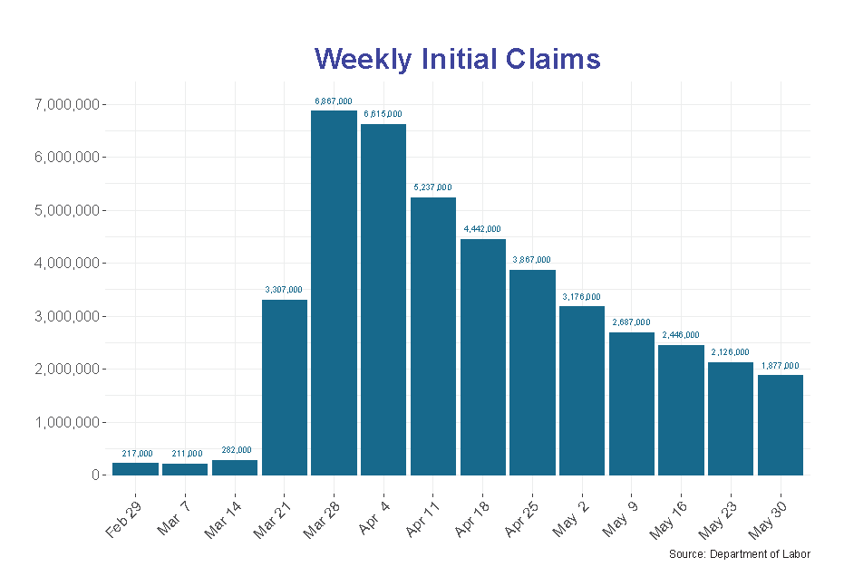
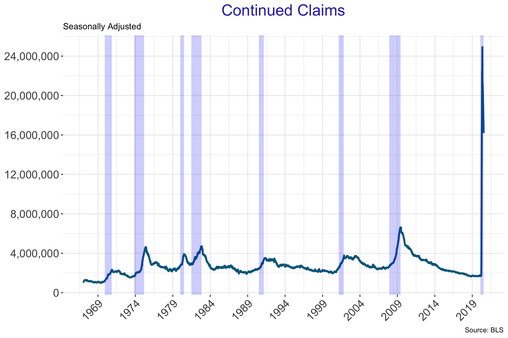
EFP has constructed its own estimates of projected job losses for California, Santa Barbara County, San Luis Obispo County, and Ventura County. The different aggregate projections by the Economic Policy Institute and St. Louis Fed underpin the predictions.
First, two separate scenarios are used: the “Private share” and “Leisure, Hospitality, and Retail share” approaches. The former assumes that all the projected job losses are uniformly distributed across industries. The second approach assumes that all job losses are concentrated in the Leisure, Hospitality, and Retail sectors. However, the true levels of future unemployment likely lie somewhere in the middle. As such, both models are weighted equally so the results serve as a reasonably conservative estimate of projected job losses. Quantity results are largely inelastic to changes in the weight scheme.
Finally, the raw losses are translated into unemployment rate figures for Santa Barbara, San Luis Obispo, and Ventura counties. Using numbers from the reference month, we calculate the effect on the unemployment rate if 0 to 50,000 additional jobs are lost. Technically this assumes that all lost jobs are by those who live in-county, but this assumption is likely unimportant quantitatively. In the graph below we see that as more individuals lose jobs, the higher is the associated unemployment rate. At 0 job losses–where each line crosses the y-axis–we recover the reference month’s unemployment rate (i.e. the rate we have most recently observed). The differences in the slopes of each line reflect differences in the base population. For example, a loss of 50,000 jobs in Ventura would indeed be painful, but would be devastating to San Luis Obispo county. The dotted lines indicate where our numbers above fall into this graph. The baseline (not seasonally adjusted) employment level for the various regions and sectors are also reported for reference.
The following prediction makes use of aggregate projections by the Economic Policy Insitute which predict a private sector contraction of 19.8 million jobs by the summer. EPI disaggregates this national figure by state; EFP follows a similar procedure to uncover county-level numbers.
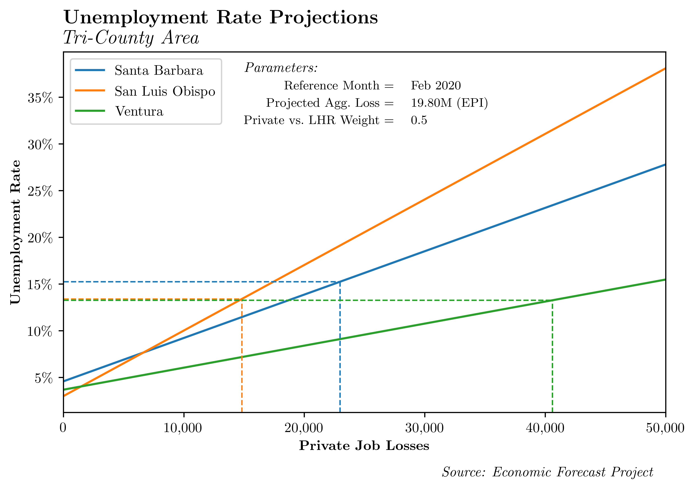
The following graph uses the St. Louis Fed’s forecast of 47 million lost jobs:
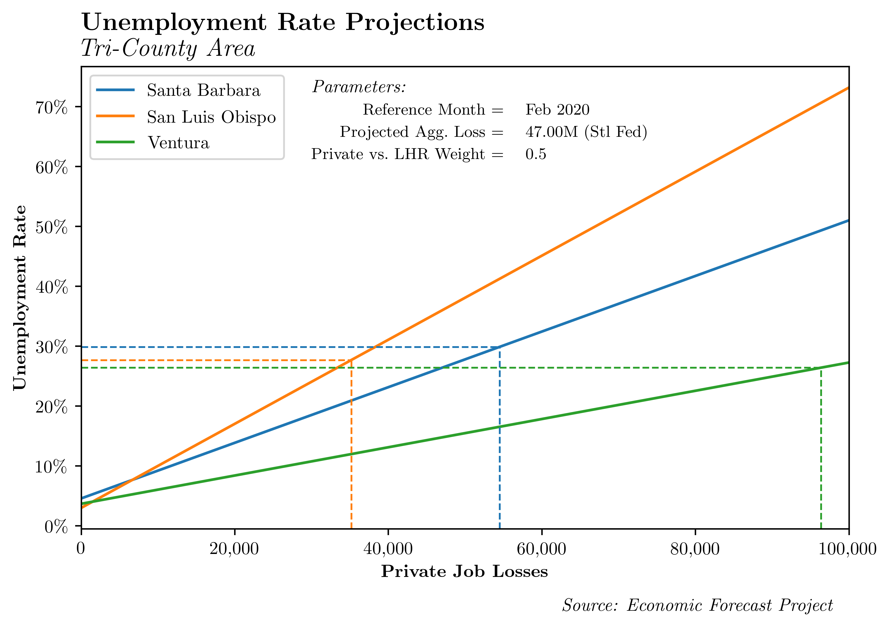
3.4 Individual and Statewide Debt
One of the lesser recognized channels through which COVID-19, and disease outbreaks more broadly, affect members of our community is through individual and collective debt obligations. With unemployment at record highs, it will be difficult for many individuals to pay their debt obligations. Moreover, because many businesses are struggling, it is not clear that unemployment will decrease sharply as our economy slowly reopens. As a result of the unprecedented financial strain on both individuals and businesses, the risk of systemic default has risen. Furthermore, the lower employment levels, depressed incomes, and fewer operating businesses will also result in decreased tax revenue for local, state, and federal governments. Combined with already high levels of public debt and new economic stimulus, it will be challenging for governments to balance budgets. As a result, it is likely that at least some of the economic burden of this crises will be passed on to future generations and an indirect effect of COVID-19 that is likely to persist for many years. But just how substantial were debt obligations leading up to the pandemic?
The graph below shows total federal government debt Prior to the pandemic, federal debt quadrupled since 2000. Reaching over $20 trillion dollars.
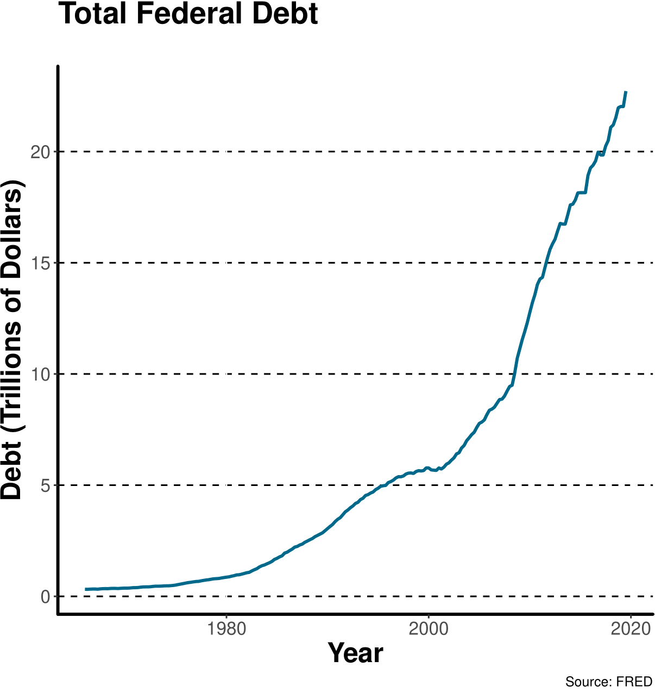
It is possible to break down debt both to a more local level and by type of debt. Much of readily available data is limited to the State level. The graph below shows revolving debt, which primarily consists of credit card debt, for both the California and the United States as a whole. The average amount of revolving debt held by individuals in the U.S. and California peaked during the Great Recession an subsequently fell sharply. Since 2013, it has steadily risen. As of 2019, revolving debt in California reached $3,810 per person while that in the United States reached $3,390 per person.
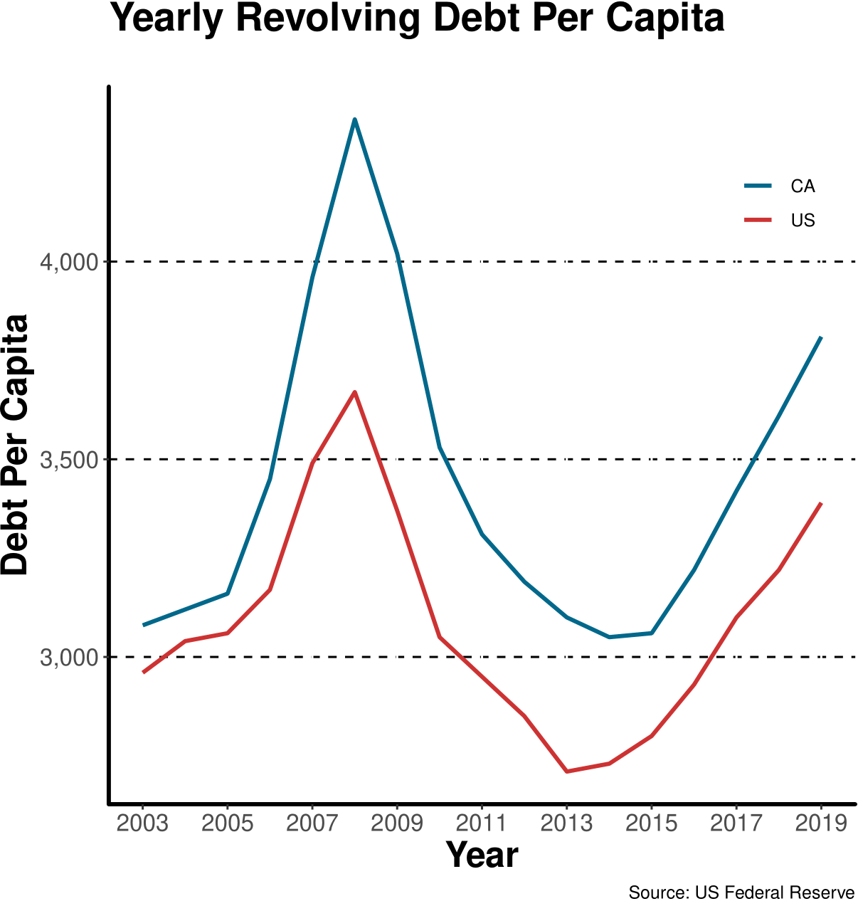
One of the largest categories of debt held by individuals is mortgage debt. Outstanding mortgage debt per capita has become a key statistic in assessing the risk of systemic default following the Great Recession, particularly when labor markets are weak or individual incomes are depressed. As for revolving debt, mortgage debt per capita peaked in 2008 and subsequently fell. In 2019, mortgage debt per capita in California and the United States rose to $57,170 and $34,790, respectively. Still, both remain below their respective peaks of $70,100 and $38,490.
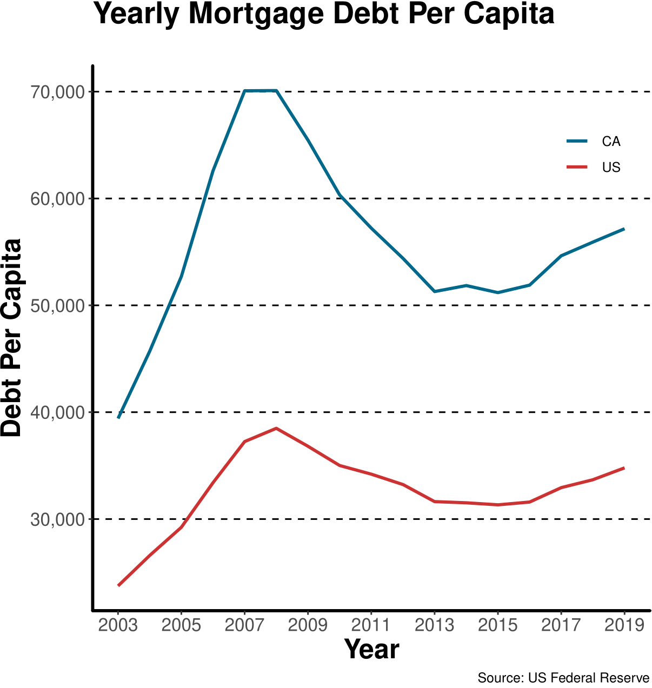
A key concern for many college educated individuals is their sometimes high levels of student loan debt. This is particularly true of both current and recent graduates who payed for higher education through loans with the expectation that they would enter a robust labor market. The graph below shows that student loans among the population have risen sharply over the past 15 years, increasing by more than a factor of 5. In 2019, student loan debt per capita in both California and the United States reached peaks of $4,640 and $5,510, respectively. These high levels of student loan debt directly effect the spending behavior of individuals, particularly when they are financially constrained due to lack of employment.
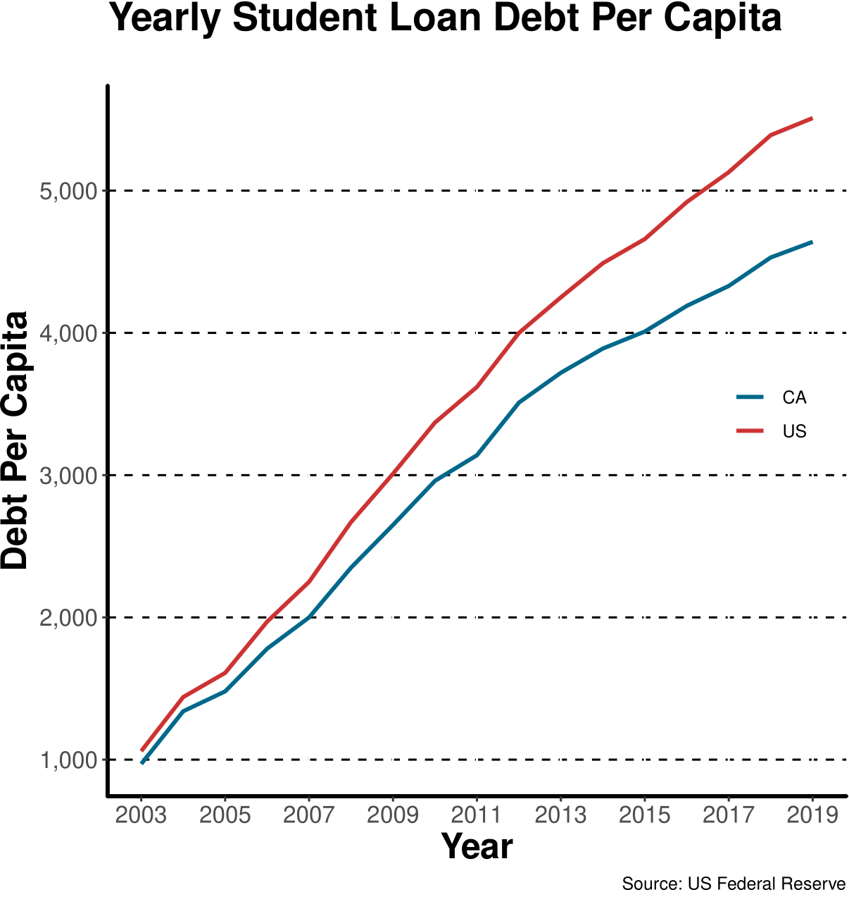
From the perspective of state and local governments, one of the key challenges to balancing budgets is the need to fund pension systems. Three of the largest pension funds that affect our local community are calPERS, calTeachers, and UCRP. The graph below displays reported total pension liabilities and the percent of liabilities that are unfunded. Because only a small fraction of calPERS is required to follow all reporting guidelines necessary for our analysis, the calPERS data represents only a part of the full calPERS pension fund. Still, we view this data as qualitatively indicative of the program as a whole. The reported total pension liabilities by of each pension fund Is $139 billion, $329 billion, and $88 billion, respectively. Each of these funds reports an unfunded ratio, i.e. fraction of liabilities for which there are insufficient fund assets, of 28%, 27%, and 21%, respectively.
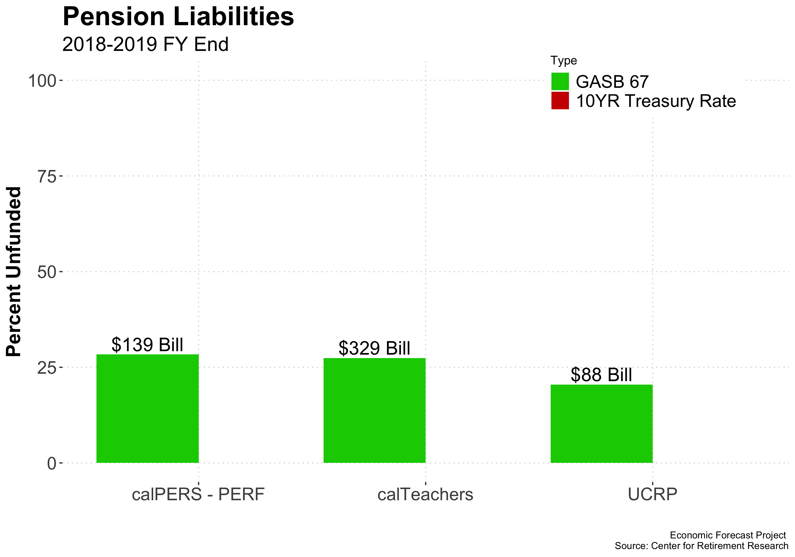
The liabilities data reported by pension funds, including those graphed above, while informative are misleading. In particular, annual financial reports produced by pension funds follow what are known as the GASB 67 guidelines. A crucial assumption necessary to calculate total pension liabilities is the assumed return of fund assets. The higher the assumed rate of return, the lower the total pension liabilities will be. The GASB 67 guidelines give funds wide latitude to set their assumed rate of return. The reported data used to construct the previous figure all assume an annual rate of return above 7%. This, however, is misguided as such a rate of return requires investment in risky assets.
The key flaw in these assumptions is that funds are allowed to implicitly assume that the assets and liabilities of the fund are equally as risky. This is not necessarily the case. The graphs below show the portfolio allocation of each pension fund. The asset mix of all three funds is heavily titled toward equities, which tend to be higher risk assets, as opposed to fixed income. Pension liabilities, on the other hand, are much more certain, i.e. less risky, than suggested by the asset mix of these funds.
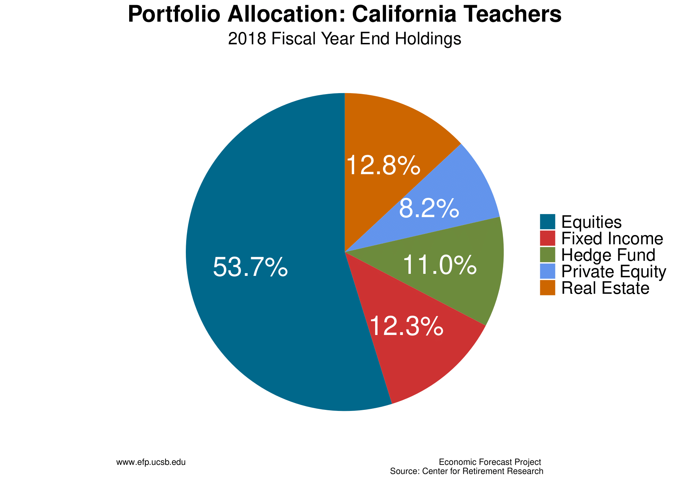
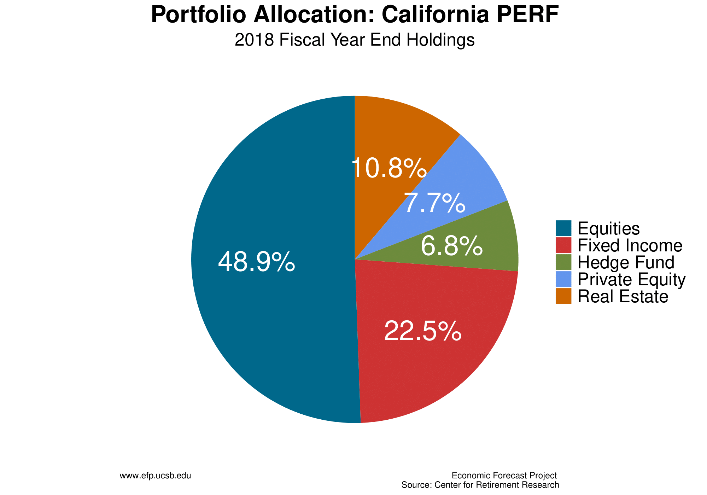
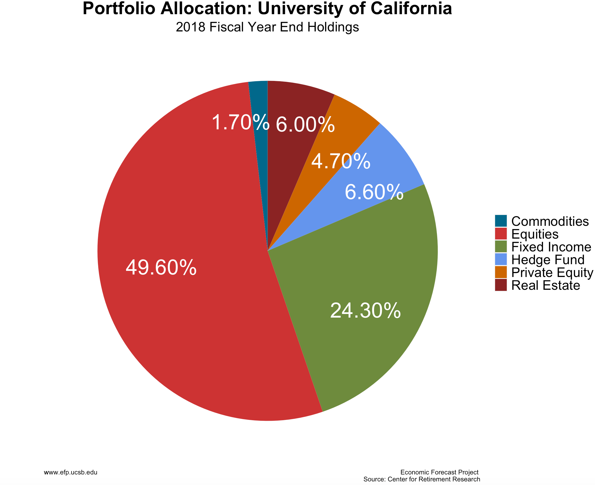
To provide both a more conservative picture of the health of pension funds and one that treats pension liabilities as more certain (less risky), pension fund liabilities should be computed using, for example, risk free rates of return. One commonly used measure of the risk free rate of return is the return on 10 year treasury bonds. The graph below shows the position of these three pension funds using a risk free rate of 2.0%. The difference between the data reported and that implied by a risk free rate is quite stark. The total liabilities and unfunded ratio of each fund roughly doubles. While both the reported data and adjusted data presented below highlight the difficulty of funding these pension systems, the adjusted data shows that substantially more work must be done to balance budgets than may be recognized by local governments.
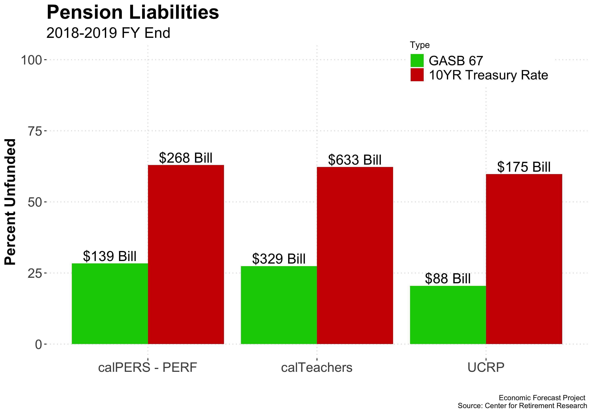